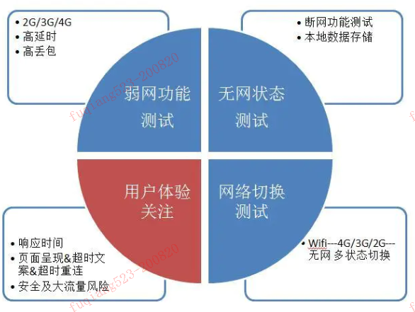
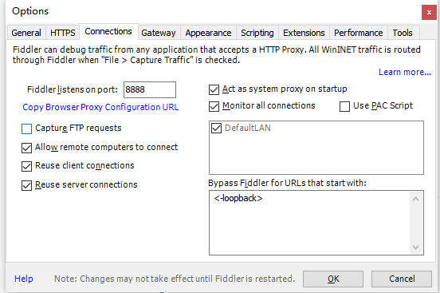
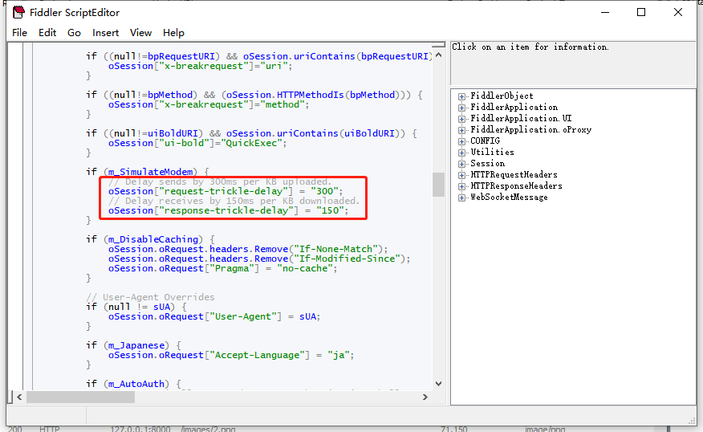
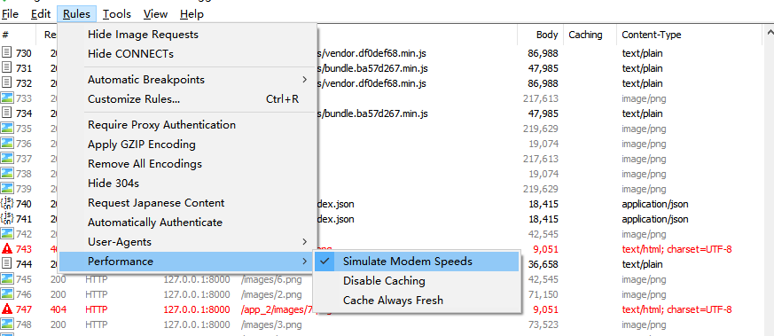
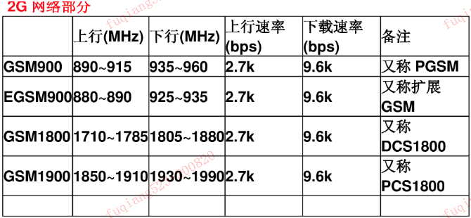
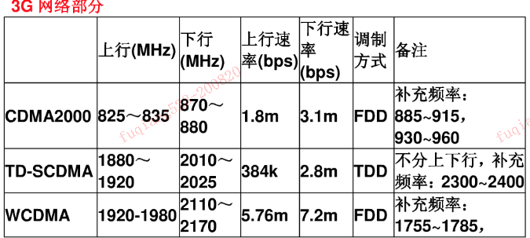
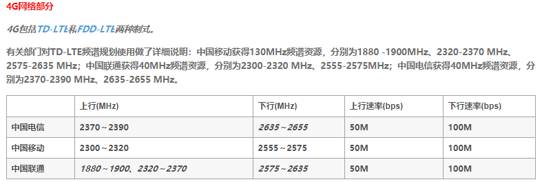

移动端弱网测试实践¶
弱网测试作为健壮性测试的重要部分，对于移动端测试来说必不可少。这是因为目前移动端产品的使用用户所处的网络并非完全的流畅 WIFI 环境，仍有相当体量的用户主要使用 5G、4G、3G、2G 等网络，另外因移动端产品使用场景多变，如进地铁、上公交、进电梯等，使得弱网测试显得尤为重要。毕竟考虑到各种场景的客户端展示及容错，能极大提升产品印象和用户体验
1. 弱网测试的思路¶

- 总结:弱网测试主要进行特殊网络状态下的功能测试同时关注用户体验，具体来说，弱网测试包括弱网功能测试、无网状态测试、网络切换测试等，测试的同时关注用户体验的诸多方面。
1.1 弱网功能测试¶
- 5G/4G/3G/2G
- 高延时
- 高丢包
1.2 无网状态测试¶
- 断网功能测试
- 本地数据存储
1.3 网络切换测试¶
- wifi/5G/4G/3G/2G/无网之间的切换
1.4 用户体验关注¶
- 页面响应时间是否可接受，关注包括热启动、冷启动时间，页面切换，前后台切换，首字时间，首屏时间等。
- 页面呈现是否完整一致
- 超时文案是否符合定义，异常信息是否显示正常。
- 是否会有超时重连
- 安全角度：是否会发生 dns 劫持、登录 ip 更换频繁、单点登录异常等。
- 大流量事件风险：是否会在弱网下进行更新 apk 包、下载文件等大流量动作。
2. 弱网测试工具之 Fiddler¶
2.1 设置代理¶

2.1 设置网络延时¶
- fiddler 主要是使用 Rules->Performance->Simulate Modem Speeds 功能进行的网络延迟模拟，点击 Rules->Customize Rules 进行设置，打开自定义脚本编辑器，如下图所示: 
- 设置完成后，在 fiddler 里将 Rules->Performance->Simulate Modem Speeds 选中即可使设置生效。 
3. 网络参考¶
3.1 2G 网络¶

3.2 3G 网络¶

3.2 4G 网络¶
